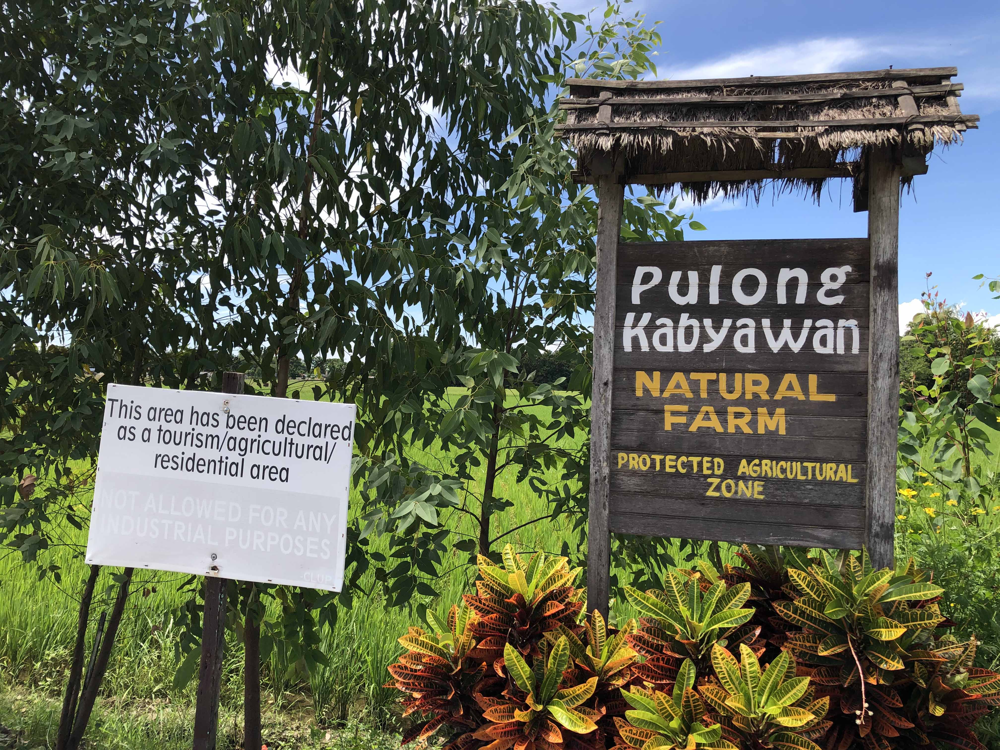

Where the Carabaos
Kneel before
Spanish Stone.
The Diocesan Shrine of San Isidro Labrador, centuries of agrarian devotion, 18th-century neoclassical stone masonry, and living community heritage along the fertile banks of the Angat River in Pulilan, Bulacan.
Diocesan Shrine & Parish of San Isidro Labrador
Short Description
The Diocesan Shrine and Parish of San Isidro Labrador is a historic church in Pulilan, Bulacan, built during the Spanish colonial period. The church has a simple and well-organized design, with a long main area that leads to the altar. It serves as an important place of worship and a center of community activities in Pulilan. The church is also known for the annual Kneeling Carabao Festival, held every May 14 and 15, where hundreds of carabaos kneel in front of the church as a sign of respect and thanksgiving to San Isidro Labrador, the patron saint of farmers.

Poblacion, Pulilan, Bulacan · Built during the Spanish colonial period.
History
Pulilan was founded by Augustinian friars in 1749 as an agricultural community under the parish of Quingua, now known as Plaridel, and was placed under the patronage of San Isidro Labrador. In 1764, it became an independent parish, with its first church and convent built from bamboo, wood, and nipa. Because people had difficulty crossing the Angat River during typhoons to attend church, a new parish was established in 1794, with Fray Vicente Villamanzo as its first parish priest. In 1826, Fray Juan Rico began building a permanent stone church, which was later damaged by earthquakes in 1863 and 1880 and rebuilt using stronger materials. The Kneeling Carabao tradition also became part of the community’s religious and farming practices. The church was consecrated on February 7, 2013, restored from 2018 to 2019, and officially became a Diocesan Shrine on December 13, 2020.
References
Pulong Kabyawan: Agricultural & Cultural Heritage
Short Description
Pulong Kabyawan is an agricultural and cultural heritage site located in Pulilan, Bulacan. It is a peaceful and green place surrounded by trees, rice fields, farm areas, and spaces where visitors can relax. Aside from its natural surroundings, the place also features a museum, a café that offers coffee, food like rice meals, pasta, pastries, and different farm-related activities that allow visitors to experience a simple version of provincial life. For our group, Pulong Kabyawan is a place where people can enjoy nature while also learning about the culture, history, art, and agricultural traditions of Bulacan.

Barangay Inaon, Pulilan, Bulacan · Farm, Art Museum & Kape't Bahay.
History and Background
Pulong Kabyawan was developed as a community effort to preserve the agricultural land and heritage of Barangay Inaon in Pulilan. According to Cartellino, residents led by Andrew Alto de Guzman worked to protect the area as industrialization began to expand around it. The project eventually became an example of community-based tourism, where local farmers and cultural workers work together to preserve the land while allowing visitors to experience farm life.
The name “Pulong Kabyawan” is associated with the agricultural character of the area and is translated in the Cartellino article as “Island of Carabao Mills.” The place continues to function as a farm, while also welcoming visitors who want to experience its cultural and natural environment.
Cultural and Historical Significance
Pulong Kabyawan is significant because it helps preserve the agricultural heritage of Pulilan while connecting it with art and culture. Visitors can see the relationship between farming, traditional ways of life, and local artistic expression.
One of its important features is Museo Pulong Kabyawan, which showcases artworks by artists from Bulacan and Pampanga and presents the history of the farm and the lives of people connected to it. The site also has traditional farm structures and spaces that reflect provincial life.
References
Spanish Colonial Era Cemetery (Campo Santo)
Short Description
The Spanish Colonial Era Cemetery, also known as Campo Santo, is a historic cemetery located beside the San Isidro Labrador Church in Pulilan, Bulacan. Dating back to the late 18th century, the cemetery is one of the few remaining church-compound cemeteries in Bulacan. Its old stone structures, adobe walls, graves, and distinctive entrance give the place a strong historical character. For us, it is interesting because even though the cemetery is very old, its structures are still visually beautiful and allow visitors to see a part of Pulilan's history.

Beside San Isidro Labrador Church, Poblacion, Pulilan, Bulacan.
History and Background
The cemetery dates back to the late 18th century, during the Spanish colonial period in the Philippines. It was established beside the church, following the traditional arrangement of having burial grounds within or near a church compound.
The cemetery is surrounded by adobe walls, while its entrance is a three-level stone-and-brick structure with an arched pediment. These structures show the architectural style and construction materials associated with older Spanish-era religious sites.
The cemetery has remained an important historical feature of Pulilan and continues to stand beside the San Isidro Labrador Church, connecting the present community with the town's colonial-era past.
Cultural and Historical Significance
The cemetery provides a physical connection to Pulilan's history during the Spanish colonial period. Its location beside the church reflects how religious life and burial traditions were closely connected in earlier communities.
From an Art Appreciation perspective, the cemetery is also valuable because of its architecture and visual details. The old adobe walls, stone-and-brick entrance, arched design, and historic graves demonstrate how structures can become part of a community's cultural heritage.
References
The North Polo Club (NPC)
Short Description
A luxury 26-hectare private equestrian club, known for its magnificent polo fields and green landscapes. It features open grounds for training, practice chukkers, tournaments, and private equestrian events, and offers riding and polo lessons for beginners.

Big Ben Farm, Pulilan, Bulacan · Tournament Chukkers & Stables.
History and Background
The North Polo Club (NPC) was established in 2014 by businessman, art collector, and polo player, Bigboy Eduardo. It was established to promote polo sport in the Philippines. Eduardo developed the agricultural lands in Pulilan, into an outstanding sports destination including specialized polo fields, riding arenas, and stables that are able to accommodate dozens of thoroughbred horses.
Cultural and Historical Significance
NPC placed Pulilan town into international equestrian map, changing its agricultural reputation into that of sports tourism destination. It changed the image from being a farming community into a center for sports tourism and high society. This place, which used to be farming land before it became a modernized place, has been given an enhancement through the inclusion of international standard polo fields and horse breeding as a result of the rich history of horses in the area.
The place hosts national and international polo tournaments, encouraging interest of locals into equestrian discipline, breeding and field sports.
References
Casa San Francisco (Laxamana Heritage House)
Short Description
Casa San Francisco is a preserved heritage house in Pulilan, Bulacan. Also known as the Laxamana House, it is an old bahay na bato that allows visitors to see traditional Filipino architecture and the lifestyle of families from an earlier period. The house features old wooden elements, furniture, paintings, tables, stairs, and a balcony that have been carefully preserved. Today, it also serves as a space for cultural activities, exhibitions, and private events.

Poblacion, Pulilan, Bulacan · Preserved Bahay na Bato & Art Space.
History and Background
Casa San Francisco was built in 1929 and is one of the heritage houses that represents Pulilan's architectural history. The house became part of efforts to preserve the town's heritage and demonstrate how old structures can continue to have a purpose in the present. According to the Inquirer, Pulilan has worked with local heritage advocates, residents, the church, and the local government to protect and restore historic places in the municipality.
Rather than completely changing the character of the house, the restoration focused on preserving its original appearance and important architectural elements. This allows visitors to experience the traditional design and atmosphere of an old Filipino heritage house.
Casa San Francisco has also been used as a venue for cultural and artistic activities. It has hosted exhibitions and events connected to Pulilan's Mandalá Art Festival, allowing the heritage house itself to become part of the community's art and cultural activities.
Cultural and Historical Significance
Casa San Francisco is culturally significant because it preserves a physical representation of Pulilan's past and Filipino heritage architecture. Its old wooden structures, furniture, paintings, staircase, tables, and balcony allow visitors to see how homes were designed and furnished during an earlier period.
From an Art Appreciation perspective, the house shows that art can also be found in architecture and everyday objects. The design of the staircase, wooden details, furniture, interior, and overall structure contributes to the artistic character of the house.
References
The Kneeling Carabao Festival
Short Description
The Kneeling Carabao Festival is a cultural and religious celebration every 14th of May in Pulilan, Bulacan. It is one of the ways to honor San Isidro Labrador, the patron saint of farmers, and serves as a thanksgiving celebration for a bountiful harvest and blessings while recognizing the hard work and contributions of local farmers. There’s a grand parade of decorated carabaos, floats, marching bands, and street dancing that attracts many tourists who come to witness this unique tradition. Also a showcase of each barangay of their decorated kubo with vegetables and other crops from their harvest, that represent the agricultural livelihood and abundance of the community. Those carabaos are trained by their owners to kneel in front of the church of San Isidro Labrador Parish Church as a sign of thanksgiving and respect for the patron saint.

Poblacion, Pulilan, Bulacan · Every 14th of May.
History
The festival is rooted in the devotion to San Isidro Labrador, a peasant field worker from Spain who was known for his deep faith and dedication to farming. According to Catholic tradition, angels helped him plow the fields while he prayed, symbolizing divine blessings for farmers. When Spanish missionaries established settlements in Pulilan, then it was dedicated to San Isidro. Pulilan was originally a barrio known as San Isidro or Buenavista under Quingua, now Plaridel, and was established under the advocation of San Isidro in 1749. The San Isidro Labrador Parish Church, built in 1829, later became the center of the tradition. Carabaos is well known as one of the important animals when it comes to farming, it became part of the tradition. The carabao trained to kneel in front of patrons as a symbol of thanksgiving, humility, and respect.
How It Is Celebrated
This begins with a grand parade of decorated carabaos, floats, marching bands, and street dancing. Carabaos are decorated with flowers, painted designs, and colorful costumes. As they pass in front of the San Isidro Labrador Parish Church, the owners signal them to kneel in front of the church while people surround them, chanting “Viva San Isidro!” and shouting “Luhod!”
Cultural Significance
The Kneeling Carabao Festival holds cultural and religious significance as a collective expression of gratitude to San Isidro Labrador for good health, protection of livestock, and fruitful agricultural harvests. It symbolizes the hard work, humility, and dedication of local farmers. Through this, it helps preserve Pulilan’s agricultural traditions and cultural heritage while bringing the community together.
References
Sumang Bulagta
Short Description
A unique Filipino glutinous rice cake (kakanin), rich in flavor, prepared in thick coconut cream and served in a flattened shape on a banana leaf.
The origins of Suman Bulagta are connected with the initial agricultural period in Bulacan. Rich harvests of rice and coconut helped local housewives to develop a way to steam sticky rice in loose wrappers of banana leaves, so that when opened, the delicacy lays flatly. It is known for its tenderness, pale yellow color, and flat presentation once it is unpacked from the leaf packaging. The word “bulagta” means “lying flat on one’s back” or “knocked out flat” in Tagalog, which is directly reflected in the shape of the cake. One distinctive feature of this sticky rice treat is its unique chewy texture that differs from the conventional cylindrical rice cake treats.

Pulilan Town Center, local markets & specialized delicacy stores.
Main Ingredients
Glutinous rice (malagkit) forms the sticky main ingredient. Lye water (lihiya) is added in small amounts to make the rice chewy and give it a nice golden shade. Water and salt serve to hydrate the rice and prepare it for cooking. The rice mixture is covered in banana leaves and is served with grated coconut, sugar, or coconut syrup (latik).
How/Where It Is Commonly Prepared or Served
Sticky rice is soaked, mixed with lye water, wrapped in banana leaves, and then boiled in large kettles until cooked. Once it is ready, the leaf wrapper is unpacked and laid out flat. The soft rice cake spreads out, and that's how it got its name "bulagta" meaning lying flat. It is a warm breakfast or meryenda treat, available for purchase at the Pulilan local markets daily.
Connection to Pulilan
Being an agriculture-based municipality, it was only natural that people of Pulilan would have sticky rice delicacies at home. Families developed a unique recipe of loose wrapping to differentiate it from the tightly bound suman of neighboring towns. Ample harvests allowed perfecting the recipes that were transferred to next generations.
Cultural/Local Significance
In Bulacan food plays a major role in social and religious celebrations. Suman Bulagta is a sign of hospitality and community gathering in Pulilan. The dish is an important culinary part of town fiestas, church festivities and especially well-known Kneeling Carabao Festival in May, where local families prepare it to share with guests.
This sticky rice treat is associated with hospitality and warmth of Bulakenyo homes. Suman Bulagta is an indispensable part of any gathering in the community, whether it is a celebration, holiday, or a reunion of the families. Suman Bulagta is always served at the Kneeling Carabao Festival every May.
Interesting Facts
Unlike other suman types (for example Suman sa Lihiya or Suman Latik), which are tightly tied in strings, Suman Bulagta is folded in a way which lets it easily open as a rectangle after cooking. It is traditionally served warm with fresh grated mature coconut meat and brown sugar or with latik (caramelized coconut cream) and tsokolate (native chocolate).
References
Dentong's Fried Itik
Description
Fried Itik is a spicy, deep-fried native duck dish. It is known for its crispy skin and tender meat, giving off a savory spice aroma. Its taste is so rich that it easily matches a good chicken fried dish. A mouth-watering local delicacy made from native Philippine duck (itik), which is marinated in an acidic brine of spices, cooked till tender, and then deep fried till crispy golden brown.

Roadside carinderias along Pulilan Highway, Bulacan.
Main Ingredients
Whole dressed native duck (itik) is the key ingredient. For the boiling process, various aromatics like garlic, onion, ginger, and celery are used to remove the gamey taste of the meat. Black peppercorns, bay leaves, salt, and vinegar are added to the pre-cooking brine. The process of frying includes cooking oil. It is also accompanied by spiced vinegar or liver gravy (sarsa).
How/Where It Is Commonly Prepared or Served
First, the duck is boiled in strongly spiced broth in order to tenderize its meat and to remove the gamey taste. After draining and drying, it is fried in the cooking oil and made extremely crispy. It is served hot and chopped into pieces at local carinderias and specialty restaurants and is usually eaten with warm rice or drinks.
Connection to Pulilan
Pulilan's proximity to the Angat River and irrigated rice fields created ideal conditions for duck farming (pag-iitik). The ducks were used for balut and salted eggs and old ducks were reused by Pulilan residents for this dish. Roadside cooks transformed the agricultural byproduct into a special local treat.
Cultural/Local Significance
The Fried Itik is a testament to the ingenuity of Bulakenyo cooking which turned farm-raised domesticated poultry into a much loved local delicacy. Through many years of roadside vendors selling itik stalls and impromptu dining places along the national roads, Pulilan became a stop-over for travelers in search of local cuisine, cementing its status as an important part of Bulakan's culinary culture and popular pulutan (beer companion). It is the perfect example of resourcefulness of Bulakenyo cuisine. Nowadays, Fried Itik became the signature savory dish of Pulilan, drawing many tourists.
Interesting Facts
The trick to the game-free taste of Fried Itik is a laborious procedure whereby the duck is first boiled in a combination of vinegar, garlic, bay leaves, peppercorn, and spices to soften the connective tissues and eliminate any smell, after which it is fried till crispy on the outside. It is usually accompanied by the signature local sauce – either a hot and sour vinegar and garlic dip or a liver-based sauce.
References
Interactive Pulilan Heritage Map
Explore the spatial layout and geographical relationship of all 8 heritage sites across Pulilan, Bulacan. Notice that the Diocesan Shrine of San Isidro Labrador, the historic Spanish Colonial Cemetery (Campo Santo), and the Kneeling Carabao Festival plaza are all anchored within the exact same historic Poblacion church compound.
01
San Isidro Labrador Church
Historic 18th-century stone church and diocesan shrine; spiritual center of Pulilan.
Pulong Kabyawan
Lush rural estate preserving historic sugarcane carabao-mill heritage and Kape't Bahay.
03
Spanish Colonial Cemetery
Historic Campo Santo located directly within the San Isidro Church compound with an ornate 3-level arch.
04
The North Polo Club
26-hectare premier polo facility and equestrian club attracting nationwide tournaments.
05
Casa San Francisco (1929)
Well-preserved 1929 Bahay na Bato showcasing heirloom architecture, capiz windows, and local art.
06
Kneeling Carabao Festival
The sacred parade grounds in front of San Isidro Church where carabaos genuflect every May 14.
07
Sumang Bulagta (Kakanin)
Pulilan's signature flat sticky rice delicacy served fresh at morning markets and town fiestas.
08
Dentong's Fried Itik
Iconic roadside dining landmark rooted in the native duck-farming heritage of the Angat River.